2017年普通高等学校招生全国统一考试 理科综合能力测试（全国Ⅰ卷）
注意事项：1．答卷前，考生务必将自己的姓名、准考证号填写在答题卡上。2．回答选择题时，选出每小题答案后，用铅笔把答题卡上对应题目的答案标号涂黑，如需改动，用橡皮擦干净后，再选涂其它答案标号。回答非选择题时，将答案写在答题卡上，写在本试卷上无效。3．考试结束后，将本试卷和答题卡一并交回。
本册收录物理部分，保留原题号14—25、33、34及全部小问；其他学科题文和相对原子质量表不属于本册范围。物理作答总分为110分：选择题48分、必考非选择题47分、选考15分。33、34两题均提供解析，考试时按原卷规则任选一题作答。
相关题目：第 14 题
本题共8小题，每小题6分，共48分。在每小题给出的四个选项中，第14—18题只有一项符合题目要求，第19—21题有多项符合题目要求。全部选对的得6分，选对但不全的得3分，有选错的得0分。
相关题目：第 14 题 · 第 15 题 · 第 16 题 · 第 17 题 · 第 18 题 · 第 19 题 · 第 20 题 · 第 21 题
返回原卷说明与本册范围 返回二、选择题（48分）
题目与已知条件
将质量为1.00 kg的模型火箭点火升空，50 g燃烧的燃气以大小为600 m/s的速度从火箭喷口在很短时间内喷出。在燃气喷出后的瞬间，火箭的动量大小为（喷出过程中重力和空气阻力可忽略）
查看原题图／原始配图
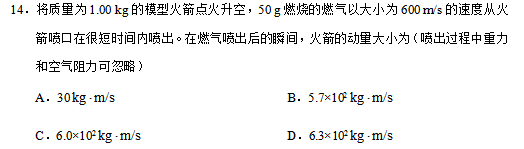
原始配图 1 · 原题及原图所用高中知识
系统动量守恒；作用力与反作用力；单位换算。
读题与思路
喷出时间很短，忽略外力冲量，火箭与喷出的燃气作为系统初动量为零。
分步解析
- 喷出燃气质量50 g=0.050 kg，其动量大小为p气=mv=0.050×600=30 kg·m/s。
- 系统总动量守恒，火箭动量与燃气动量等大反向，因此火箭动量大小同为30 kg·m/s。题目不要求火箭速率，无需求剩余质量。
检查与易错点
600 m/s是题设给出的燃气速度，不能把总质量1 kg乘这个速度当作火箭动量。
本题来源：paper · cross · drive-ref-1
返回二、选择题（48分）
题目与已知条件
发球机从同一高度向正前方依次水平射出两个速度不同的乒乓球（忽略空气的影响）。速度较大的球越过球网，速度较小的球没有越过球网，其原因是
查看原题图／原始配图
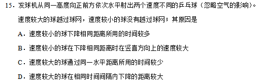
原始配图 1 · 原题及原图B.速度较小的球在下降相同距离时在竖直方向上的速度较大
所用高中知识
平抛运动；同水平距离的到达时间；竖直下落。
读题与思路
两球同高水平射出，到球网的水平距离相同。比较到网时间，再比较竖直下落量。
分步解析
- 设球网距发球机水平距离L。球到网所需时间t=L/v₀，水平初速度越大，时间越短。
- 竖直初速度都为0，下落量h=gt²/2；速度较大的球到网时下落较少，因而可以越网，而较慢的球下落更多被网挡住。
- 同样的竖直下落距离所需时间相同，故A错；同一下落位置的竖直速度相同，B错；同一时间的下落距离也相同，D错。
检查与易错点
“较快的球下落得少”必须限定比较的是到达同一水平位置时，不能改成比较同一时刻。
本题来源：paper · cross · drive-ref-1
返回二、选择题（48分）
题目与已知条件
如图，空间某区域存在匀强电场和匀强磁场，电场方向竖直向上（与纸面平行），磁场方向垂直于纸面向里，三个带正电的微粒a、b、c电荷量相等，质量分别为ma、mb、mc。已知在该区域内，a在纸面内做匀速圆周运动，b在纸面内向右做匀速直线运动，c在纸面内向左做匀速直线运动。下列选项正确的是
匀强电场竖直向上，磁场垂直纸面向里查看原题图／原始配图
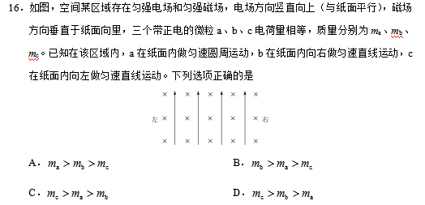
原始配图 1 · 原题及原图所用高中知识
重力与电场力；洛伦兹力方向；匀速圆周与直线运动。
读题与思路
匀速圆周运动的向心力随方向变化，所以恒定重力与恒定电场力必须先抵消。
分步解析
- a在该区域内作匀速圆周运动，qE=mag，由洛伦兹力单独提供向心力。
- b为正电荷、速度向右、磁场向纸内，由左手定则洛伦兹力向上。直线匀速需mbg=qE+qvbB，因此mb>ma。
- c速度向左，其洛伦兹力向下，平衡式qE=mcg+qvcB，所以mc<ma。
检查与易错点
本书保留正式选项顺序B；某些早期转载曾调整选项，不能只搬字母而不看具体表达式。
本题来源：paper · cross · drive-ref-1
返回二、选择题（48分）
题目与已知条件
大科学工程“人造太阳”主要是将氘核聚变反应释放的能量用来发电。氘核聚变反应方程是
已知的质量为2.0136 u，的质量为3.0150 u，的质量为1.0087 u，1 u＝931 MeV/c2。氘核聚变反应中释放的核能约为
查看原题图／原始配图
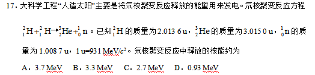
原始配图 1 · 原题及原图读题与思路
先把反应前后所有粒子的静质量相减，再乘每原子质量单位对应的能量。
分步解析
- 反应为两个氘核生成一个氦3核和一个中子。质量亏损Δm=2×2.0136−3.0150−1.0087=0.0035 u。
- 释放核能ΔE=Δmc²=0.0035×931 MeV=3.2585 MeV，约3.3 MeV。
检查与易错点
质量亏损必须是“反应前总质量减反应后总质量”。题目已经给出u与MeV/c²的换算，不必再转成kg。
本题来源：paper · cross · drive-ref-1
返回二、选择题（48分）
题目与已知条件
扫描隧道显微镜（STM）可用来探测样品表面原子尺度上的形貌。为了有效隔离外界振动对STM的扰动，在圆底盘周边沿其径向对称地安装若干对紫铜薄板，并施加磁场来快速衰减其微小振动，如图所示。无扰动时，按下列四种方案对紫铜薄板施加恒磁场；出现扰动后，对于紫铜薄板上下及其左右振动的衰减最有效的方案是
STM扫描头、底盘与紫铜薄板示意图查看原题图／原始配图
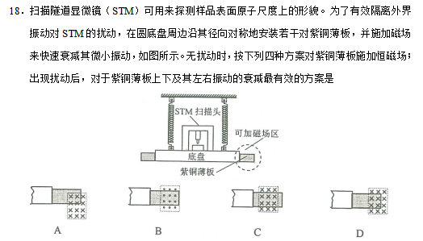
原始配图 1 · 原题及原图所用高中知识
电磁感应；涡流；楞次定律；有效磁通变化。
读题与思路
阻尼必须对上下、左右两个方向的位移都能产生磁通量变化。看清磁场边界与铜板边缘的相对位置。
分步解析
- 导体铜板在非均匀覆盖的磁场中运动时，不同部分切割磁感线，出现涡流；涡流受到的磁力阻碍相对运动，把机械能转化为内能。
- A方案中磁场区与铜板右端的部分区域相交：铜板横向振动会改变进入磁场的面积，竖向振动也会改变被磁场覆盖的部分，两个方向都具有有效阻尼。
- 其余图示中至少有一个方向的小振动不能有效改变覆盖面积，或磁场主要处在板内/板外，不能同时高效抑制两种振动。
检查与易错点
不能认为“磁场覆盖越多，阻尼必然越好”。关键是小位移时磁通量是否发生变化。原题四个图形都保留。
本题来源：paper · cross · drive-ref-1
返回二、选择题（48分）
题目与已知条件
如图，三根相互平行的固定长直导线L1、L2和L3两两等距，均通有电流I，L1中电流方向与L2中的相同，与L3中的相反，下列说法正确的是
三根导线横截面：L₁、L₂电流向里，L₃电流向外，两两等距查看原题图／原始配图
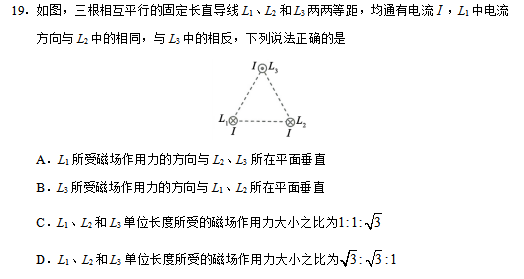
原始配图 1 · 原题及原图C.L1、L2和L3单位长度所受的磁场作用力大小之比为1∶1∶√3
D.L1、L2和L3单位长度所受的磁场作用力大小之比为√3∶√3∶1
读题与思路
三对导线距离相同、电流大小相同，所以每一对单位长度磁力大小相同，只需按方向合成。
分步解析
- 记每一对导线单位长度作用力大小为f。L₁和L₂电流同向，互相吸引；L₃与它们反向，分别互相排斥。
- L₁受到的两个力夹120°，合力大小√(f²+f²+2f²cos120°)=f；L₂由对称性也为f。其方向不是垂直于另两导线所在平面，A错误。
- L₃受到两个夹60°的斥力，水平分量抵消，竖直合力大小2fcos30°=√3f，方向垂直于L₁、L₂所在平面，B正确。
- 因此单位长度合力大小比为1:1:√3，C正确、D错误。
检查与易错点
不能将两个力的大小直接相加；夹角决定合力。L₃与另外两根导线电流反向是方向判断的关键。
本题来源：paper · cross · drive-ref-1
返回二、选择题（48分）
题目与已知条件
在一静止点电荷的电场中，任一点的电势φ与该点到点电荷的距离r的关系如图所示。电场中四个点a、b、c和d的电场强度大小分别为Ea、Eb、Ec和Ed。点a到点电荷的距离ra与点a的电势φa已在图中用坐标（ra，φa）标出，其余类推。现将一带正电的试探电荷由a点依次经b、c点移动到d点，在相邻两点间移动的过程中，电场力所做的功分别为Wab、Wbc和Wcd。下列选项正确的是
点电荷电势φ随距离r变化的原始读图坐标，保留刻度及曲线查看原题图／原始配图
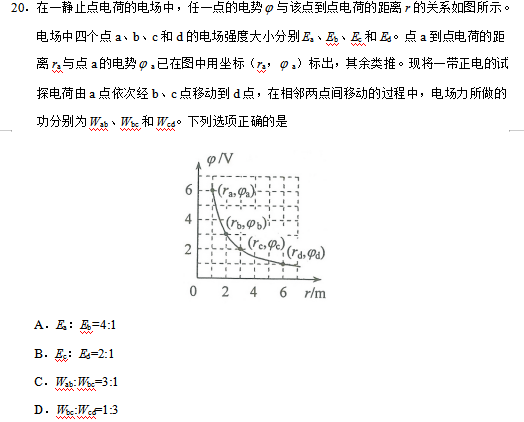
原始配图 1 · 原题及原图读题与思路
从图读出各点距离和电势，再分别用E与1/r²、W与电势差的关系判断。
分步解析
- 图上a、b、c、d对应r=1、2、3、6 m，电势分别为6、3、2、1 V，与点电荷电势φ=kQ/r一致。
- Ea/Eb=(rb/ra)²=4，A正确。Ec/Ed=(6/3)²=4，不是2，B错误。
- 相邻移动的电场力功分别Wab=q(6−3)=3q，Wbc=q(3−2)=q，Wcd=q(2−1)=q。故Wab:Wbc=3:1，C正确；Wbc:Wcd=1:1，D错误。
检查与易错点
场强比不能照搬电势比。相同电势差才对应相同电场力功，与路程长度没有直接的正比关系。
本题来源：paper · cross · drive-ref-1
返回二、选择题（48分）
题目与已知条件
如图，柔软轻绳ON的一端O固定，其中间某点M拴一重物，用手拉住绳的另一端N。初始时，OM竖直且MN被拉直，OM与MN之间的夹角为α（α＞π/2）。现将重物向右上方缓慢拉起，并保持夹角α不变。在OM由竖直被拉到水平的过程中
轻绳OM竖直，M处拴重物，OM与MN夹角为α查看原题图／原始配图
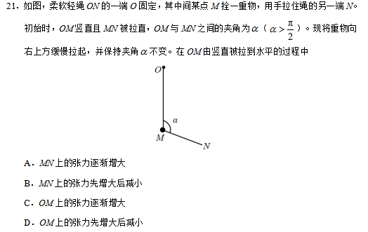
原始配图 1 · 原题及原图读题与思路
保持两绳夹角α不变，且原题α>π/2。用力三角形将张力表示为转角θ的函数。
分步解析
- 设OM从初始竖直方向转过θ，0≤θ≤π/2。缓慢移动时重物始终近似平衡。由三力三角形正弦定理，有TMN/sinθ=mg/sinα。
- 所以TMN=mg sinθ/sinα。α固定，sinθ从0单调增至1，MN张力逐渐增大，A正确、B错误。
- 同一三角形给TOM=mg sin(α−θ)/sinα。因π/2<α<π，α−θ从钝角逐渐降到锐角，途中经过π/2，所以其正弦先增后减。
- 因此OM张力先增大后减小，D正确、C错误。最大值出现在α−θ=π/2时。
检查与易错点
原题是α>π/2，不能看反不等号。轻绳同一段张力相等不意味着结点M两边的两段张力相同，因为M处有外力。
本题来源：paper · cross · drive-ref-1
原理综卷：非选择题共174分。第22—32题为必考题，每个试题考生都必须作答。第33—38题为选考题，考生根据要求作答。
（一）必考题，共129分。以上174分、129分均为整份理综的跨科分值。本册物理必考题为22—25题，共47分。
相关题目：第 22 题 · 第 23 题 · 第 24 题 · 第 25 题
返回三、非选择题与必考题
题目与已知条件
（5分）某探究小组为了研究小车在桌面上的直线运动，用自制“滴水计时器”计量时间。实验前，将该计时器固定在小车旁，如图（a）所示。实验时，保持桌面水平，用手轻推一下小车。在小车运动过程中，滴水计时器等时间间隔地滴下小水滴，图（b）记录了桌面上连续的6个水滴的位置。（已知滴水计时器每30 s内共滴下46个小水滴）
图（a）滴水计时器与小车图（b）连续六个水滴，原始距离83、100、117、133、150 mm（1）由图（b）可知，小车在桌面上是________（填“从右向左”或“从左向右”）运动的。
（2）该小组同学根据图（b）的数据判断出小车做匀变速运动。小车运动到图（b）中A点位置时的速度大小为________ m/s，加速度大小为________ m/s2。（结果均保留2位有效数字）
查看原题图／原始配图
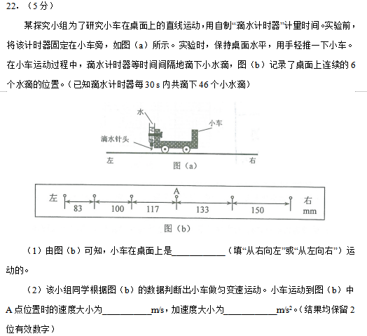
原始配图 1 · 原题及原图所用高中知识
等时间间隔；中间时刻速度；相邻位移差；有效数字。
读题与思路
小车被轻推后在水平桌面受阻力减速，运动方向应使连续间距逐渐缩小。
分步解析
- 图中从右往左间距为150、133、117、100、83 mm，逐渐减小，小车被轻推后在桌面上做减速运动，相同时间内的位移逐渐减小，因此小车从右向左运动。
- 30 s内46滴对应45个时间间隔，T=30/45=2/3 s。不能把滴数46直接当间隔数。
- A前后相邻两段的总距离为(117+133) mm=0.250 m，对应时间2T=4/3 s。匀变速中间时刻速度等于平均速度，vA=0.250/(4/3)=0.1875 m/s，保留2位有效数字0.19 m/s。
- 为求加速度，可取相隔两个间隔的位移133 mm与100 mm。它们的差为33 mm=2aT²，故a=0.033/[2×(2/3)²]=0.037125 m/s²，取0.037 m/s²。实际测量各段有取整误差，用其他合理逐差组合会略有不同。
答案
（1）从右向左；（2）0.19 m/s，0.037 m/s²。
检查与易错点
加速度方向与运动方向相反，向右；本题只填大小。判断运动方向要结合“减速”与间距变化：先滴下的水滴间距大。
本题来源：paper · cross · drive-ref-1
返回三、非选择题与必考题
题目与已知条件
（10分）某同学研究小灯泡的伏安特性，所使用的器材有：小灯泡L（额定电压3.8 V，额定电流0.32 A）；电压表V（量程3 V，内阻3 kΩ）；电流表A（量程0.5 A，内阻0.5 Ω）；固定电阻R0（阻值1000 Ω）；滑动变阻器R（阻值0～9.0 Ω）；电源E（电动势5 V，内阻不计）；开关S；导线若干。
（1）实验要求能够实现在0～3.8 V的范围内对小灯泡的电压进行测量，画出实验电路原理图。
（2）实验测得该小灯泡伏安特性曲线如图（a）所示。
图（a）小灯泡I-U实测曲线：保留原始网格和曲线，不拟合重绘图（b）电源E₀、滑动变阻器R、灯泡L和开关S由实验曲线可知，随着电流的增加小灯泡的电阻________（填“增大”“不变”或“减小”），灯丝的电阻率________（填“增大”“不变”或“减小”）。
（3）用另一电源E0（电动势4 V，内阻1.00 Ω）和题给器材连接成图（b）所示的电路，调节滑动变阻器R的阻值，可以改变小灯泡的实际功率。闭合开关S，在R的变化范围内，小灯泡的最小功率为________ W，最大功率为________ W。（结果均保留2位小数）
查看原题图／原始配图
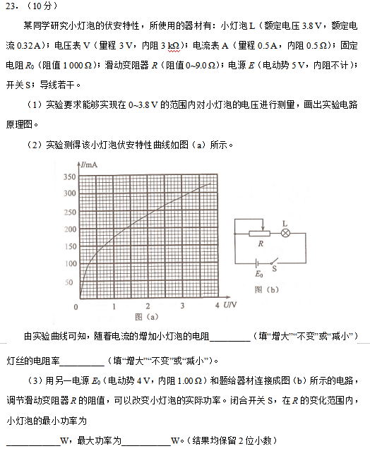
原始配图 1 · 原题及原图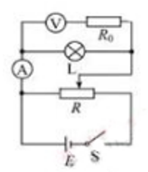
修订前解析配图 2 · 来源参考电路所用高中知识
电压表扩大量程；分压电路；伏安曲线；电源负载线。
读题与思路
实验电压需达到3.8 V而现有电压表只有3 V量程，先用已知内阻和定值电阻扩程。求实际功率时必须让电源与灯泡曲线同时满足。
分步解析
- 电压表内阻3000 Ω，串联1000 Ω后量程扩大为3×(3000+1000)/3000=4 V，能覆盖0—3.8 V。扩程组合与小灯泡并联。
- 为从0开始连续调压，滑动变阻器用分压接法；灯泡电阻较小，电流表采用外接法以减小误差。参考电路中V与R₀串联后跨接灯泡，A测供给灯泡与电压支路的总电流。来源参考电路
- 从I—U曲线看，电流增加时U/I增大，灯丝电阻增大；灯丝几何尺寸变化可忽略时，R=ρl/S说明电阻率也增大，原因是温度升高。
- 第(3)问外电源电动势4 V、内阻1 Ω，滑阻器0—9 Ω。灯泡工作点满足U=4−(1+R)I。R=9 Ω时作负载直线U=4−10I，与灯泡曲线交点给最小功率UI≈0.39 W；R=0时作U=4−I，交点给最大功率约1.17 W。
- 随串联电阻减小，灯泡电压、电流都增加，故两端点就是功率范围的端点。读图结果按题意保留2位小数。
答案
（1）电压表与R₀串联（改装成量程4 V的电压表）后并联在灯泡两端，电流表外接，滑动变阻器采用分压接法（电路图见解析）；（2）增大，增大；（3）最小功率0.39 W，最大功率1.17 W。
检查与易错点
灯泡为非线性元件，不能用额定电阻代替整条伏安曲线。扩程后的总支路电压为原电压表示数的4/3倍。
本题来源：paper · cross · drive-ref-1
返回三、非选择题与必考题
题目与已知条件
（12分）一质量为8.00×104 kg的太空飞船从其飞行轨道返回地面。飞船在离地面高度1.60×105 m处以7.50×103 m/s的速度进入大气层，逐渐减慢至速度为100 m/s时下落到地面。取地面为重力势能零点，在飞船下落过程中，重力加速度可视为常量，大小取为9.8 m/s2。（结果保留2位有效数字）
（1）分别求出该飞船着地前瞬间的机械能和它进入大气层时的机械能；
（2）求飞船从离地面高度600 m处至着地前瞬间的过程中克服阻力所做的功，已知飞船在该处的速度大小是其进入大气层时速度大小的2.0%。
查看原题图／原始配图
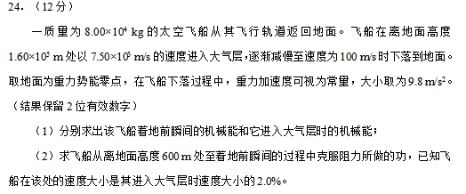
原始配图 1 · 原题及原图读题与思路
按题意把近地重力加速度视为常量，以地面为势能零点。阻力做负功，克服阻力的功为机械能减少量。
分步解析
- 着地前速度100 m/s，机械能只有动能：E地=m v²/2=(8.00×10⁴)×100²/2=4.0×10⁸ J。
- 进入大气层时高度1.60×10⁵ m、速度7.50×10³ m/s，E入=m v入²/2+mgh=2.25×10¹²+1.2544×10¹¹=2.37544×10¹² J，取2.4×10¹² J。
- 600 m高处速度为入大气层速度的2.0%，即150 m/s。到地面机械能减少W=m g×600+m(150²−100²)/2。
- 代入得W=4.704×10⁸+5.000×10⁸=9.704×10⁸ J，保留2位有效数字9.7×10⁸ J。
答案
（1）着地前4.0×10⁸ J；进入大气层时2.4×10¹² J。（2）克服阻力做功9.7×10⁸ J。
检查与易错点
阻力对飞船做功为−9.7×10⁸ J，题目问“克服阻力做功”应报正值。
本题来源：paper · cross · drive-ref-1
返回三、非选择题与必考题
题目与已知条件
（20分）真空中存在电场强度大小为E1的匀强电场，一带电油滴在该电场中竖直向上做匀速直线运动，速度大小为v0。在油滴处于位置A时，将电场强度的大小突然增大到某值，但保持其方向不变。持续一段时间t1后，又突然将电场反向，但保持其大小不变；再持续同样一段时间后，油滴运动到B点。重力加速度大小为g。
（1）求油滴运动到B点时的速度。
（2）求增大后的电场强度的大小；为保证后来的电场强度比原来的大，试给出相应的t1和v0应满足的条件。已知不存在电场时，油滴以初速度v0做竖直上抛运动的最大高度恰好等于B、A两点间距离的两倍。
查看原题图／原始配图
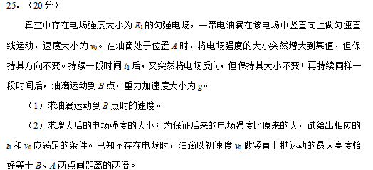
原始配图 1 · 原题及原图所用高中知识
匀变速直线运动；有向速度与位移；参数范围和分类讨论。
读题与思路
向上为正，先把反向前后两段加速度明确写出。末态可能在A上方或下方，距离条件必须分两支。
分步解析
- 设油滴质量m，取电荷量的大小q；初始匀速要求qE₁=mg。令k=E₂/E₁>1。第一次场强增大但方向不变，向上电场力为kmg，加速度a₁=(k−1)g。
- 第一段末速度v₁=v₀+(k−1)gt₁。反向后电场力向下，加速度a₂=−(k+1)g，再经t₁到B：vB=v₁−(k+1)gt₁=v₀−2gt₁。这是向上为正的有向速度。
- 两段位移为s₁=v₀t₁+(k−1)gt₁²/2，s₂=v₁t₁−(k+1)gt₁²/2，相加s=2v₀t₁+(k−2)gt₁²。
- 若竖直上抛初速度v₀，最高上升h抛=v₀²/(2g)。题给它等于A、B间距离的两倍，所以d=|s|=v₀²/(4g)。
- 若B在A上方，s=+d，解得k=2−2v₀/(gt₁)+v₀²/(4g²t₁²)。再施加k>1，可得0<t₁<(1−√3/2)v₀/g，或t₁>(1+√3/2)v₀/g。两区间分别对应B点速度向上和向下。
- 若B在A下方，s=−d，解得k=2−2v₀/(gt₁)−v₀²/(4g²t₁²)。由k>1且t₁>0，得t₁>(1+√5/2)v₀/g。
- 最后将各支k乘E₁即得E₂。速度方向由v₀−2gt₁的正负另行判断，不能由B在A上方就断言其向上运动。
答案
（1）vB=v₀−2gt₁（向上为正）。
（2）B在A上方：E₂=E₁[2−2v₀/(gt₁)+v₀²/(4g²t₁²)]，条件0<t₁<(1−√3/2)v₀/g或t₁>(1+√3/2)v₀/g。
B在A下方：E₂=E₁[2−2v₀/(gt₁)−v₀²/(4g²t₁²)]，条件t₁>(1+√5/2)v₀/g。
检查与易错点
时间边界全部为严格不等号，因为题目要求增大后的E₂严格大于E₁。不能把“速度”擅写成永远非负的速率，也不能漏掉B在A下方一支。
本题来源：paper · cross · drive-ref-1
原理综卷：选考题共45分。请考生从2道物理题、2道化学题、2道生物题中每科任选一题作答。如果多做，则每学科按所做的第一题计分。
本册物理选考题为第33、34题，每题15分。以下两道题均完整收录。
相关题目：第 33 题 · 第 34 题
返回（二）选考题
题目与已知条件
［物理——选修3–3］（15分）
（1）（5分）氧气分子在0 ℃和100 ℃温度下单位速率间隔的分子数占总分子数的百分比随气体分子速率的变化分别如图中两条曲线所示。下列说法正确的是________。（填正确答案标号。选对1个得2分，选对2个得4分，选对3个得5分。每选错1个扣3分，最低得分为0分）
氧气分子速率分布：实线与虚线及原有刻度保持不变A．图中两条曲线下面积相等
B．图中虚线对应于氧气分子平均动能较小的情形
C．图中实线对应于氧气分子在100 ℃时的情形
D．图中曲线给出了任意速率区间的氧气分子数目
E．与0 ℃时相比，100 ℃时氧气分子速率出现在0～400 m/s区间内的分子数占总分子数的百分比较大
（2）（10分）如图，容积均为V的汽缸A、B下端有细管（容积可忽略）连通，阀门K2位于细管的中部，A、B的顶部各有一阀门K1、K3；B中有一可自由滑动的活塞（质量、体积均可忽略）。初始时，三个阀门均打开，活塞在B的底部；关闭K2、K3，通过K1给汽缸充气，使A中气体的压强达到大气压p0的3倍后关闭K1。已知室温为27 ℃，汽缸导热。
汽缸B在左、A在右，K₃、K₁在顶部、K₂连接两缸（i）打开K2，求稳定时活塞上方气体的体积和压强；
（ii）接着打开K3，求稳定时活塞的位置；
（iii）再缓慢加热汽缸内气体使其温度升高20 ℃，求此时活塞下方气体的压强。
查看原题图／原始配图
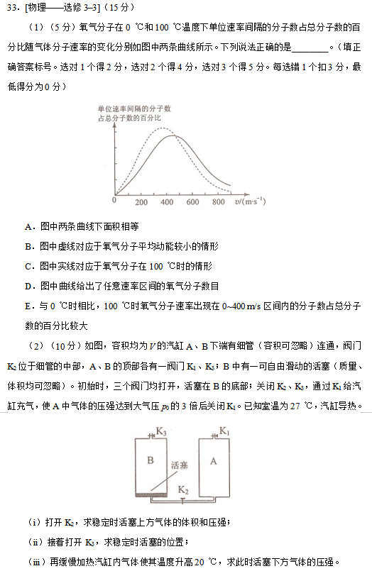
原始配图 1 · 原题及原图所用高中知识
分子速率分布；理想气体等温、等容变化；活塞平衡。
读题与思路
第(1)问纵轴是百分比分布；第(2)问活塞上下两团气体物质的量不同，但稳定时轻活塞两侧压强相等。
分步解析
- 第(1)问两条曲线下总面积都代表全部分子的100%，A正确。低温曲线偏左、峰较高，虚线对应0 ℃、分子平均动能较小，B正确；实线对应100 ℃，C正确。图只给比例，不能给绝对分子数，D错误；升温后0—400 m/s内所占比例减少，E错误。答案ABC。
- 第(2)(i)初态活塞在B底部，上方气体为p₀、V；A内为3p₀、V。开K₂后设活塞上方体积V₁、共同压强p，活塞下方与A的总体积为2V−V₁。两团气体均等温：pV₁=p₀V，p(2V−V₁)=3p₀V。相加得p=2p₀，回代V₁=V/2。
- 第(ii)开K₃后活塞上方与大气相通，压强为p₀。下方气体即使扩展到最大2V，压强仍为3p₀V/(2V)=1.5p₀>p₀，所以会一直把活塞推至B顶部，并由顶部限制停住。
- 第(iii)此时下方气体体积固定2V，初温300 K，升高20 ℃即到320 K。等容p/T不变，p₃=(1.5p₀)×320/300=1.6p₀。
答案
（1）ABC；（2）（i）上方气体V/2、2p₀；（ii）活塞位于B顶部；（iii）1.6p₀。
检查与易错点
选考总15分，两部分5+10分。升高20 ℃等于升高20 K，但气体方程中的绝对温度应使用300 K与320 K。
本题来源：paper · cross · drive-ref-1
返回（二）选考题
题目与已知条件
［物理——选修3–4］（15分）
（1）（5分）如图（a），在xy平面内有两个沿z方向做简谐振动的点波源S1（0，4）和S2（0，−2）。两波源的振动图线分别如图（b）和图（c）所示，两列波的波速均为1.00 m/s。两列波从波源传播到点A（8，−2）的路程差为________ m，两列波引起的点B（4，1）处质点的振动相互________（填“加强”或“减弱”），点C（0，0.5）处质点的振动相互________（填“加强”或“减弱”）。
图（a）波源及A、B、C点坐标；图（b）（c）两波源振动图线，保留原始相位与刻度（2）（10分）如图，一玻璃工件的上半部是半径为R的半球体，O点为球心；下半部是半径为R、高为2R的圆柱体，圆柱体底面镀有反射膜。有一平行于中心轴OC的光线从半球面射入，该光线与OC之间的距离为0.6R。已知最后从半球面射出的光线恰好与入射光线平行（不考虑多次反射）。求该玻璃的折射率。
玻璃工件：半球半径R、圆柱高2R，底面为反射膜查看原题图／原始配图
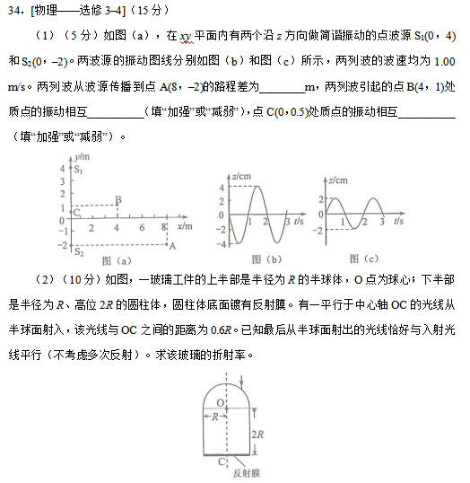
原始配图 1 · 原题及原图所用高中知识
路程差；相位差；折射定律；镜面反射与圆几何。
读题与思路
波动题把波源初相差与传播路程差合起来；光学题利用平行出射的对称性，找到底面反射点。
分步解析
- 第(1)问振动图周期均为2 s，波速1 m/s，波长λ=2 m。A(8,−2)到S₁(0,4)的距离10 m，到S₂(0,−2)的距离8 m，路程差2 m。
- 两波源初相相反。B(4,1)到两波源距离均为5 m，传播相位差为0，保留反相，因此减弱。C(0,0.5)到两源距离分别3.5与2.5 m，差1 m=λ/2，传播多出的半周期把初始反相变为同相，故加强。
- 第(2)问设入射点D。入射、出射都平行中心轴，利用光路对称性和可逆性，内部光线必须在圆柱底面中心C反射，出射部分为入射部分关于轴OC的镜像。
- 取O为原点、向上为纵向。D横坐标0.6R，位于球面上，纵坐标√(R²−0.36R²)=0.8R；C在O下方2R。因此DC=√[(0.6R)²+(2.8R)²]=√205 R/5。
- 入射角i的正弦为0.6。折射角r是内部光线DC与球面内法线DO的夹角。三角形ODC中，面积既为(1/2)OC×0.6R=0.6R²，也为(1/2)OD×DC×sin r，所以sin r=1.2R/DC=6/√205。
- 由空气射入玻璃的折射定律sin i=n sin r，n=0.6/(6/√205)=√205/10=√2.05，约1.43。
答案
（1）2 m；减弱；加强。（2）n=√205/10≈1.43。
检查与易错点
选考总15分，两部分5+10分。两源振幅可以不同，仍能讨论加强或减弱；“减弱”不一定意味着振幅为零。光学中的入射角和折射角均对法线量取。
本题来源：paper · cross · drive-ref-1
题源与核验说明
- 2017.html旧版解析文件；SHA-256：0d67a8ecaebb925a319878a4c65113228cf1999580b78513e3fe8f807afa3326
- 2017年高考真题——理综（全国I卷） Word版含解析【KS5U 高考】.doc所附参考资料；SHA-256：5c339bc8f9867e999b693bb61258623277341133be793f4c4e5203b83b77e28b
- 河南高考信息网 2017全国Ⅰ理综原题公开重排原题与答案，所用图版重新下载并核实。q14—q25裁自第5—9张图，q33—q34裁自第14—15张图，q23-circuit来自第22张参考答案图。原题含所有选考，全部保留。题16B、18A为本版原选项顺序。
- 2017全国Ⅰ理综物理参考答案图同一转载的物理答案及推导，答案图22—26用于核对。第22题参考图把运动方向误写为从左向右，本书依原题减速条件和间距改为从右向左，并保留0.037m/s²的合理逐差算法；未将参考答案视作不可纠错。